related paths 4 architects
Portuguese architecture is one of the cultural manifestations with the most significant recognition abroad. It is the result of a long-standing process that began with the dissemination of Álvaro Siza's work and its recognition as heritage that far transcends any notion of border or nation. The following generations seem to have continued this legacy, and today, Portuguese architecture is recognized both within and outside its disciplinary field as a singular activity.
The exhibition showcases the work of four Lisbon-based architecture studios. Four built works from each studio are presented, addressing themes of contemporary conditions such as heritage, reuse, and landscape, as well as the ambition to make the most significant number, particularly in the realm of housing, in response to the global crisis surrounding this issue.
An exhibition of Portuguese architects in Japan seems to resonate with Japanese culture itself, which is also characterized by a group of reference architects whose work has informed Western culture since the early 20th century. In this interplay of reflections, the aim is to establish a hypothesis for dialogue and to initiate cooperation processes between both countries, using architecture as a common ground.
The project is a sequence of three events: an installation inside the Portuguese pavilion at Expo 2025 in Osaka, followed by a lecture at the Nakanoshima Museum of Art, and a second exhibition inside the Nipponbashi House gallery, a Tadao Ando-designed building in Osaka.

Exhibition view — Nipponbashi House, Osaka


The intervention at the Portuguese pavilion manifests itself as an orchestrated composition of two projection panels, creating a spatial dialogue within the existing multifunction space. The intervention deliberately creates an enclosure that transforms the interior, disordered space into an intimate place where visitors can engage with the exhibited works at close range. The design philosophy stems from the fundamental desire to create an enclosed architectural space within the context of an architecture exhibition.
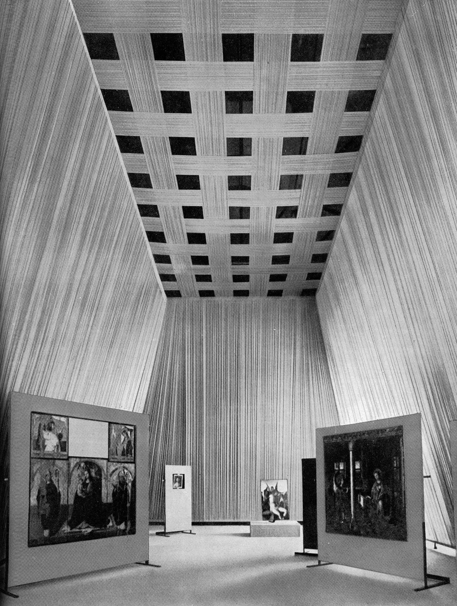
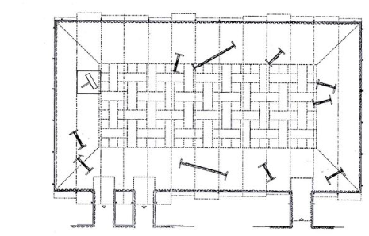
This project in itself takes inspiration, in the form of an homage to Carlo Scarpa’s and Roberto Calandra’s schenographic project for the Antonello da Messina exhibit, held at Palazzo Zanca de Messina in 1953. In a similar manner, objects that want to be contemplative are placed in a rectangular room. While the arrangement seems casual at first, the position intends to frame the views, ensuring each video projected on the screens has its own focal point, guiding the viewer's gaze, even though constrained by the small room.
Each of the two built screens serves as a portal into distinct visual narratives of four architects, their works interweaving into a collective discourse. The materiality of the screens is expressed through dark textile screens, framed into untreated metal profiles - a conscious decision to celebrate the raw aesthetics of the construction elements. This intentional separation between materials echoes the exhibition’s broader themes, with the frames and screens working harmoniously to create an intervention reminiscent of a rough art installation.
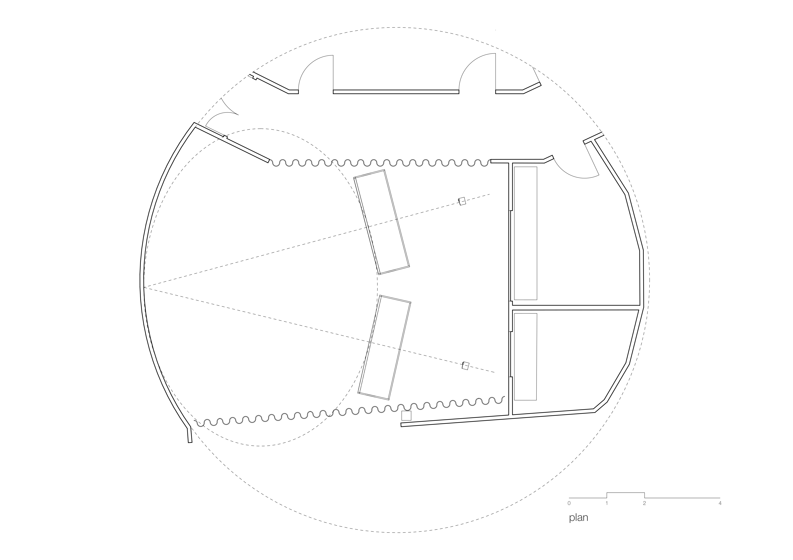
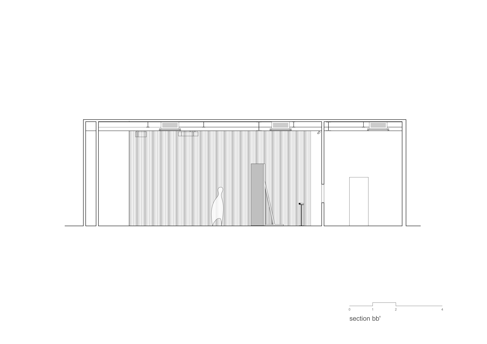
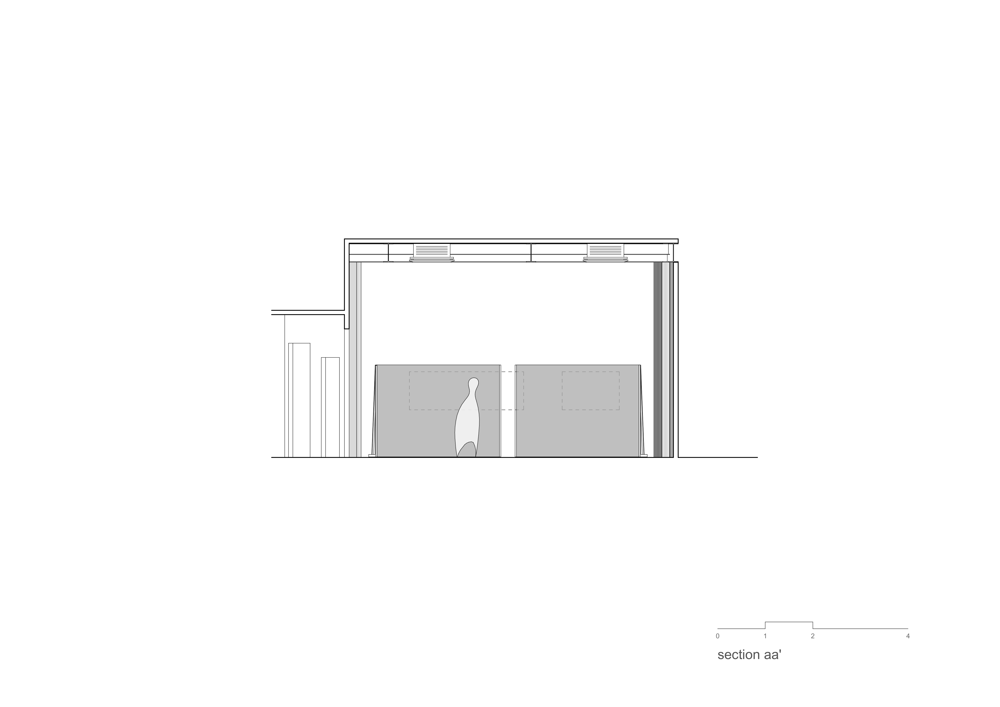
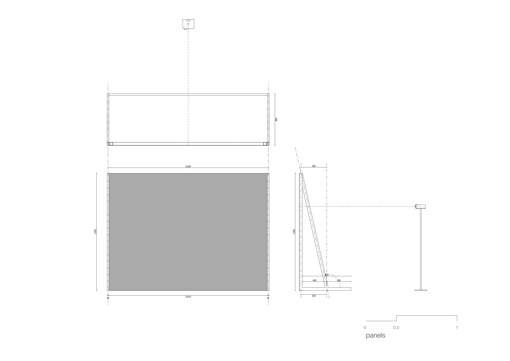
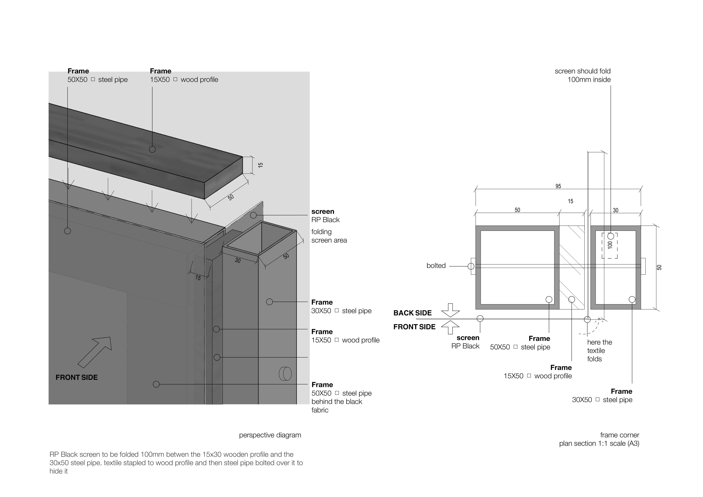
Portugal Pavillion Expo 2025 Osaka credits
project type - exhibition
curator - alexandre vicente
collaborators -
steel work - guido saldana
fabrics - showtex
video - luis maia, date seiji
montage - timur kiryashov
text translations - sugami
photography - satoru moriwaki
The second exhibition, held at the Nipponbashi House in Osaka, enabled a different kind of installation. We opted for a more personal approach to showcasing the architect’s work. Here, A3 and A2 stiff board panels presented the architect’s projects through photography work. Instead of colour, as used in the pavilion exhibition, we chose black and white for this one. Through this monotone presentation, each project gained a newfound strength. This decision was also made to ensure that the exhibition would not contrast too strongly with the already powerful architecture that housed it.
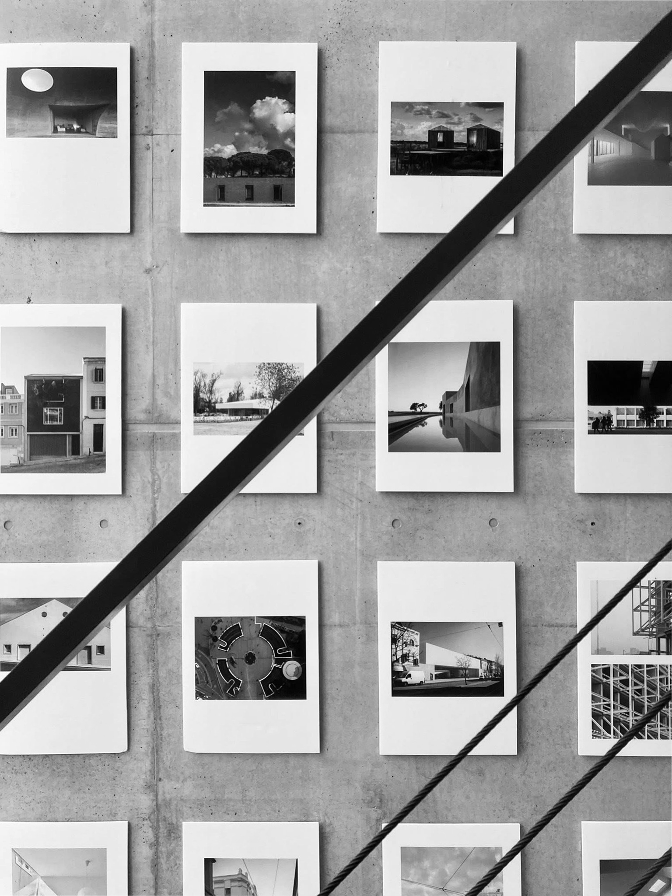

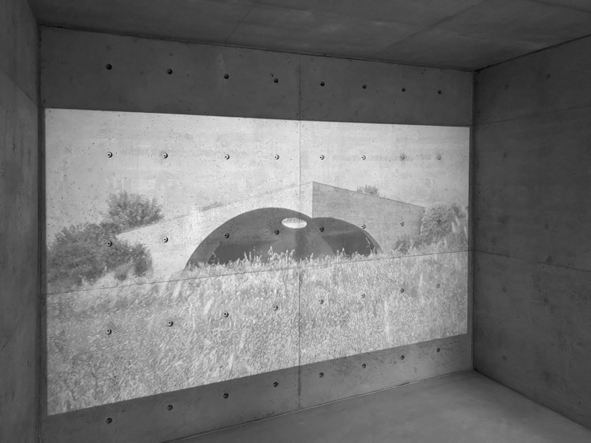


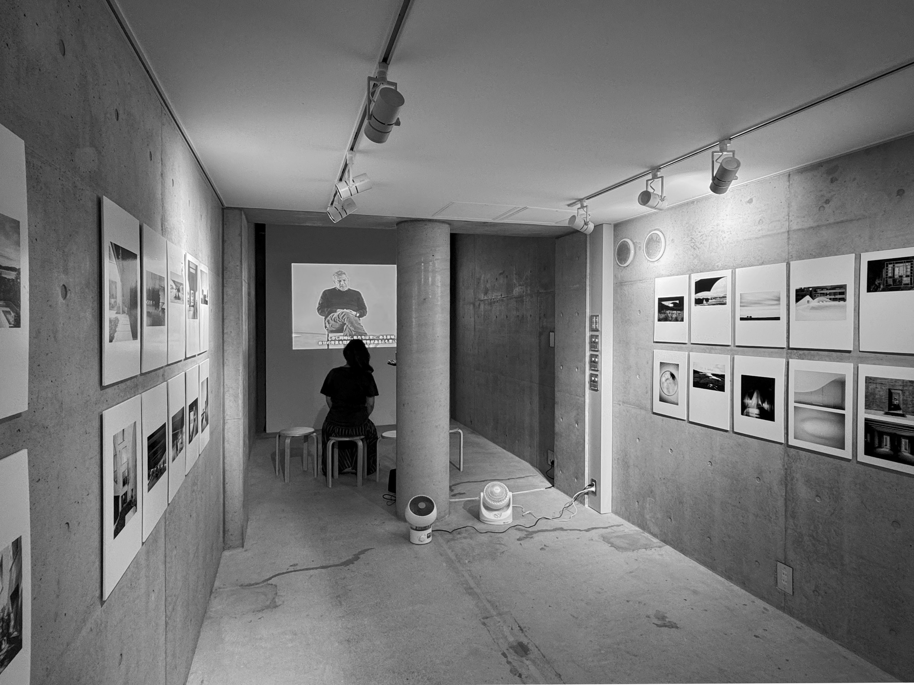
The panels were positioned sequentially. In placing them, we treated each wall as a plane; in this way, a specific composition was required so that the panels would not only align with the building but also blend effortlessly into it. The white background of the images helped frame and compose the wall design, while also influencing the size of the images and drawing the viewer closer.
Nipponbashi House Exhibition credits
project type - exhibition
curator - alexandre vicente
collaborators -
montage and scientific advise - benjamin hutton
text translations - sugami
video - luis maia, date seiji
To archive the events and exhibitions, a book titled Related Paths was produced. The book was developed in close collaboration with the architects. Its design and layout were created by Portuguese designer Pedro Falcão and it was published by AMAG.
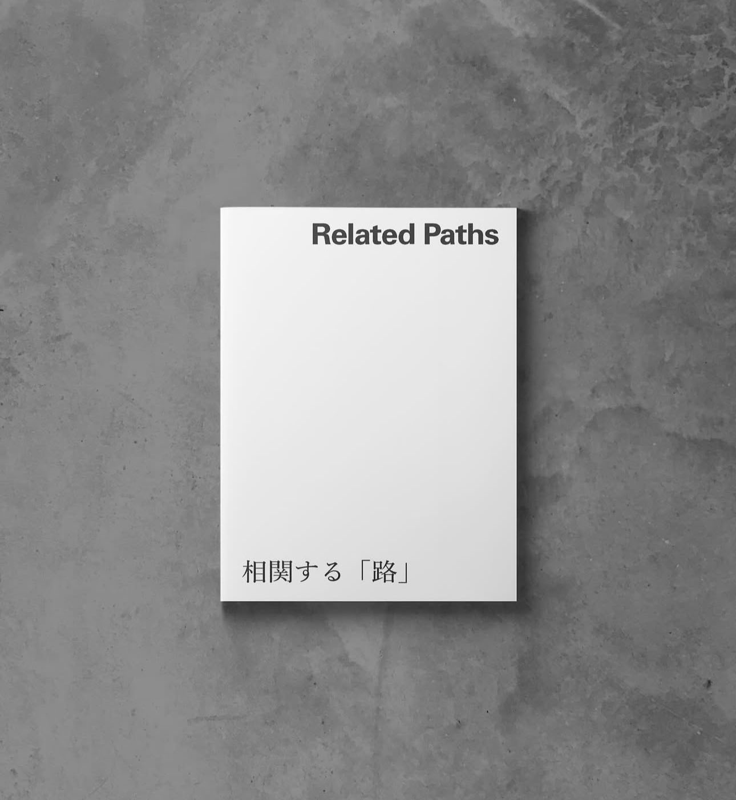
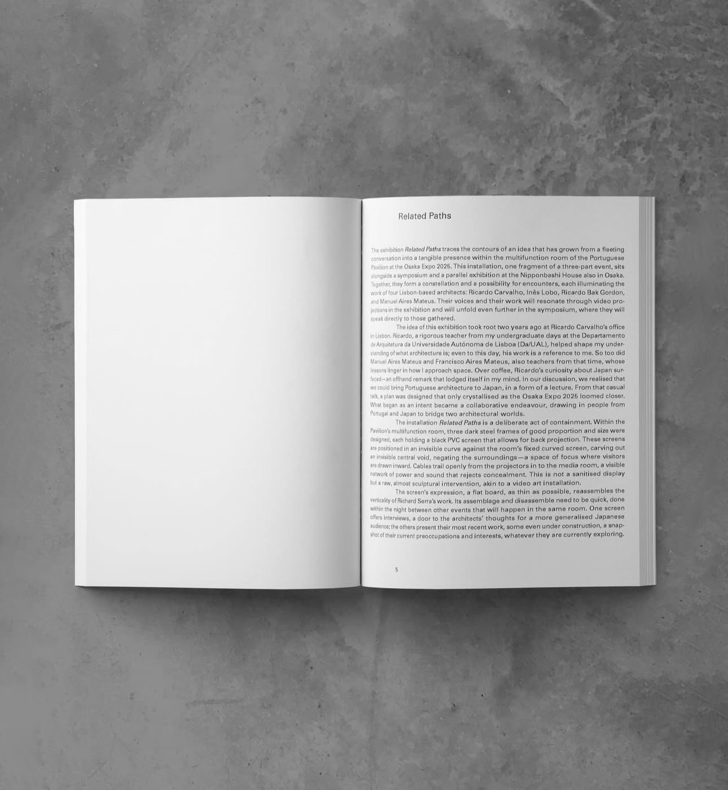
Related Paths 4 Architects Catalog credits
editor - alexandre vicente
scientific consultant - ricardo carvalho
graphic design - atelier pedro falcão
publisher - amag publisher
Finally, to complete the sequence of events celebrating Portuguese architecture in Osaka, a symposium was held at the Nakanoshima Museum. Most of the projects presented at the symposium were also featured in the exhibitions and the book.
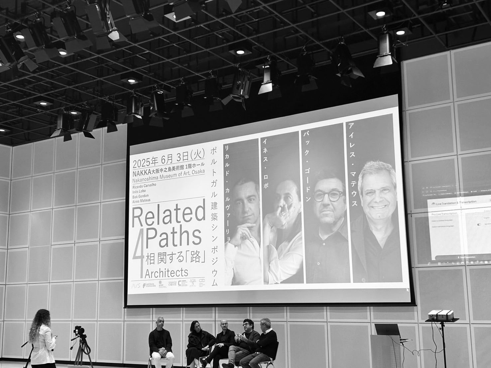
Related Paths 4 Architects Symposium
moderator - alexandre vicente
speakers - ricardo carvalho
- ines lobo
- ricardo bak gordon
- manuel aires mateus
organization - alexandre vicente, hiroko chino
mistranslations
Add your project descriptioTranslation, by definition, is not limited to the conversion of one language into another. It is the diffusion of an entity between disparate mediums, dependent on a hierarchical synthesis and transmission of concepts between ambiguous yet demarcated layers. The act of adapting information is an intrinsically imperfect operation as it is simultaneously a reinterpretation, where conscious and unconscious decisions influence authored output. Ideas are often complex and convoluted, with constituents inevitably added or subtracted in the process.
Architects, similar to translators, interpret concepts and drawings to make buildings. Converting a two-dimensional representation into three-dimensional space inevitably produces errors in translation, which cumulate regardless of an author's cognizance. n here.
Mistranslations transpire as imprints of abraded graphite channels from paper to screen, self-assembling into agglomerations of quadratic pixels, returning from the cybernetic in favor of composite clusters of timber, stone, and metal. As the cyclical pathways from the analog and digital become well-traversed, the resulting bumps and bruises create transmission losses that remain as vestiges of space.
Built mistranslations assume the form of a language that can be comprehended outside of semantics. These ambiguous translational intersections between rhetoric, representation, and reality will be investigated throughout this exhibition.

Image caption


The exhibition's journey, in itself, is a traversal between languages and serves as a metaphor for the ideological translation of its contents. Throughout the exhibit, imperfect interpretations of the work occur through a series of translucent yet opaque textiles that divide the gallery interior.
These textiles separate the viewer from the exhibited material and concurrently serve as corridors through the space. The fabric's optical quality forms ethereal, wispy projections that lie just beyond the grasp of perception. By selectively concealing architectural models, allusions are made to the discovery and realization of an idea during the design process. Ideas with hazy, undefined edges reside within the realm of consciousness until they are translated into reality. Shadows cast by the concealed models lurk and sway in the exhibition room, like scattered concepts, observed by the visitor as they enter the designer's mind.
Ideas float in space as a collection of imagined architecture. Through the installation, the intention to tear away the boundaries of the built environment is represented physically by Tadao Ando's architecture. The interaction between the building and the exhibition will serve as an investigation into a situational approach to architecture that revels in distortion and ambiguity.
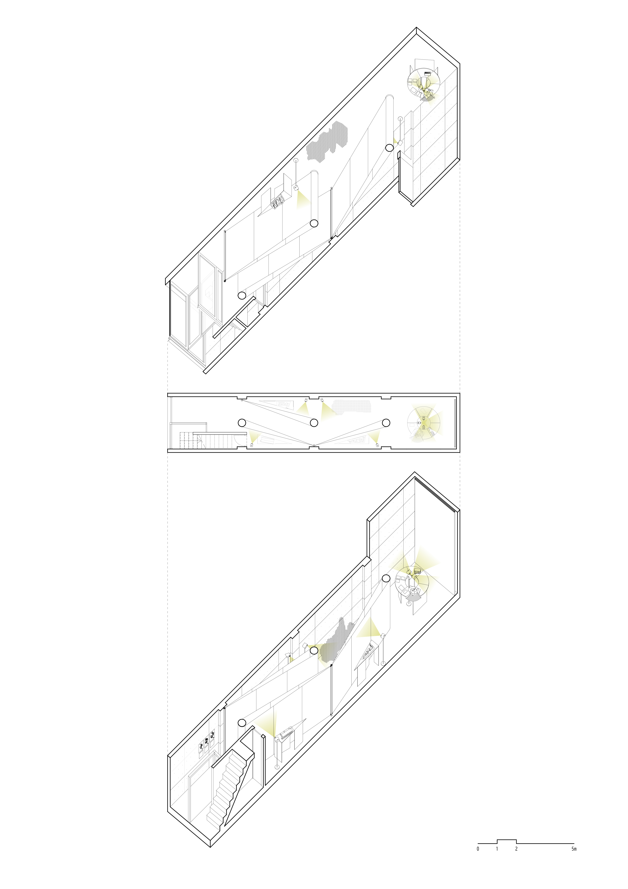
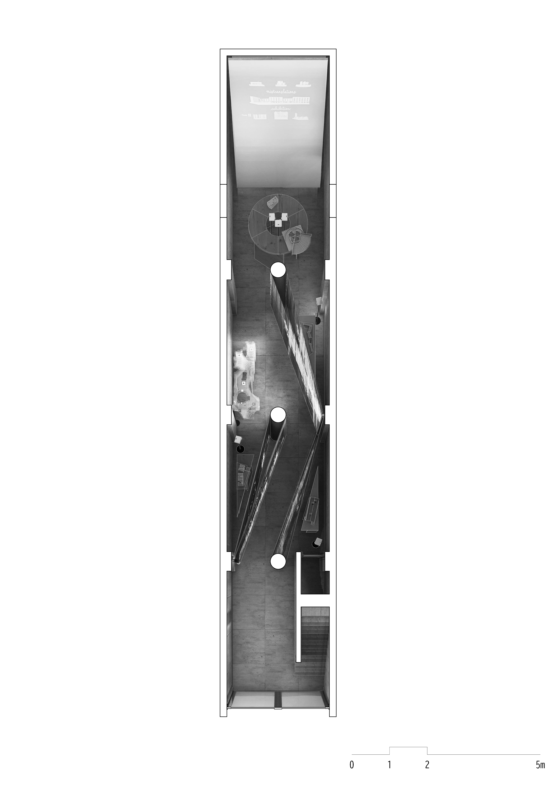
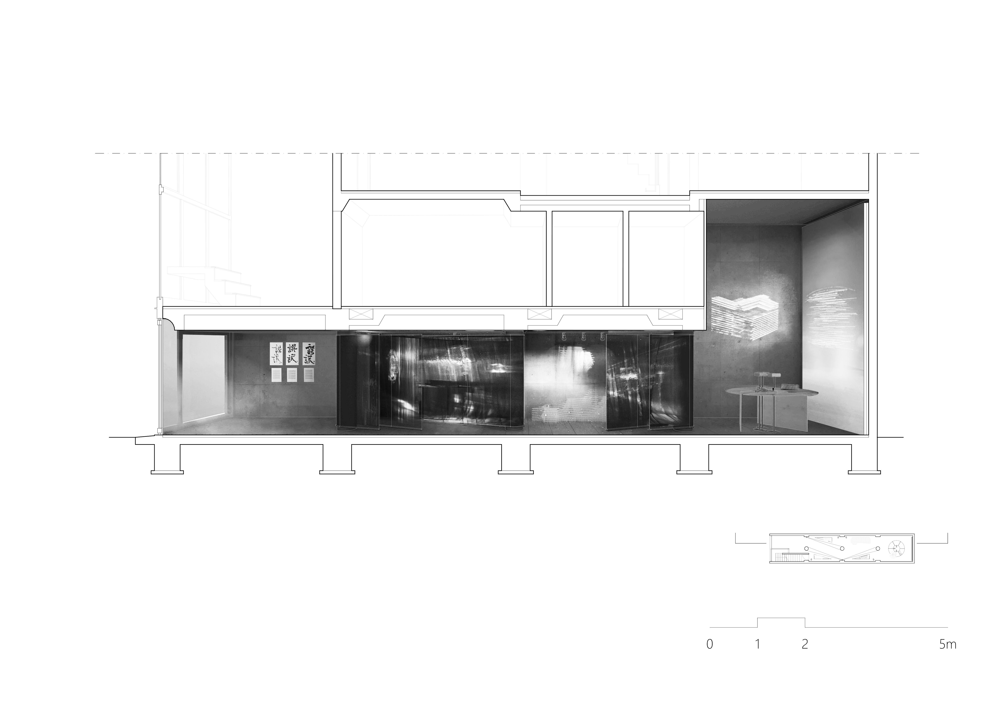
Throughout the gallery are models coauthored by the exhibition's architects. As a medium of architecture, the model is an object that is easy to understand because of its inherent physicality. Even in its imperfections – strands of glue, remnants of fingerprints – the model reveals what cannot be perceived in drawings and renderings. However, it also becomes a tool that explores the subdividing branches of an ever-evolving idea. In this way, the model is capable of freezing a moment in the design process as a tangible entity.
With the incremental aggregation of these captured volatile states, the architect can begin to study and compare the efficacy of ideological translations between models. With every model's material, structural, and aesthetic shift, a new set of mistranslations are introduced. As the model grows in scales of magnitude, it must contend with the realities of the physical world: the weight of material, the efficacy of structure, the connection of components. Styrene, acrylic, and glue translate into concrete, glass, and silicone. What value, then, do mistranslations hold?
Although "mistranslation" connotes an innate negativity, it presents a generative opportunity to utilize the unexpected remnants of the process to create development. In the realm of biology, genetic mistranslations are the tools by which organisms evolve and survive. We are interested in embracing mistranslations as a method of refining architectural design.

Mistranslations credits
project type - exhibition
design & curation - alexandre vicente, ken farris
steel work - guido saldana
fabrics - tomoco tagawa
woodwork - hideo wada
graphic advisor - andrew chee
music design - sugami
physical models - tadashi miyake, fumiya hitomi
photography - yosuke ohtake, satoru, moriwaki, hiroki nakadoi, masashi sugita
casa m
Add your project description here.

Image caption
almada housing
Add your project description here.

Image caption
lid miami
Add your project description here.

Image caption
juromenha
Add your project description here.

Image caption
casa moriguchi
Add your project description here.

Image caption